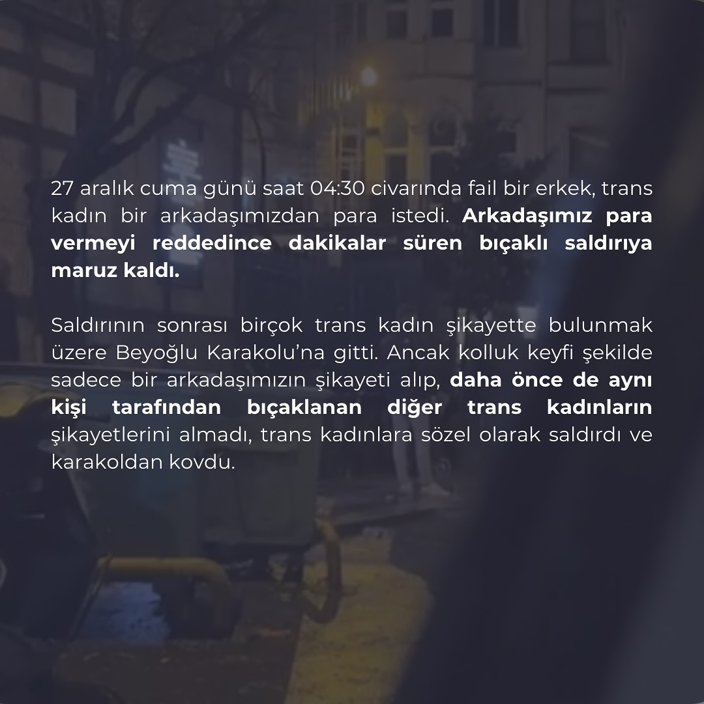
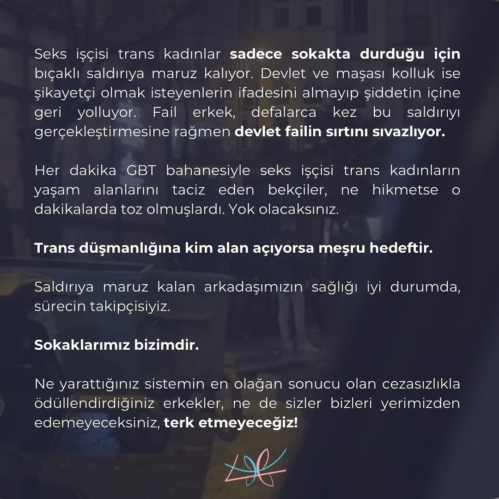

2024-12-30 08:46:00
27 aralık cuma günü saat 04:30 civarında fail bir erkek, trans kadın bir arkadaşımızdan para istedi. Arkadaşımız para vermeyi reddedince dakikalar süren bıçaklı saldırıya maruz kaldı.
Saldırının sonrası birçok trans kadın şikayette bulunmak üzere Beyoğlu Karakolu’na gitti. Ancak kolluk keyfi şekilde sadece bir arkadaşımızın şikayeti alıp, daha önce de aynı kişi tarafından bıçaklanan diğer trans kadınların şikayetlerini almadı, trans kadınlara sözel olarak saldırdı ve karakoldan kovdu.
Seks işçisi trans kadınlar sadece sokakta durduğu için bıçaklı saldırıya maruz kalıyor. Devlet ve maşası kolluk ise şikayetçi olmak isteyenlerin ifadesini almayıp şiddetin içine geri yolluyor. Fail erkek, defalarca kez bu saldırıyı gerçekleştirmesine rağmen devlet failin sırtını sıvazlıyor.
Her dakika GBT bahanesiyle seks işçisi trans kadınların yaşam alanlarını taciz eden bekçiler, ne hikmetse o dakikalarda toz olmuşlardı. Yok olacaksınız.
Trans düşmanlığına kim alan açıyorsa meşru hedeftir.
Saldırıya maruz kalan arkadaşımızın sağlığı iyi durumda, sürecin takipçisiyiz.
Sokaklarımız bizimdir.
Ne yarattığınız sistemin en olağan sonucu olan cezasızlıkla ödüllendirdiğiniz erkekler, ne de sizler bizleri yerimizden edemeyeceksiniz, terk etmeyeceğiz!

